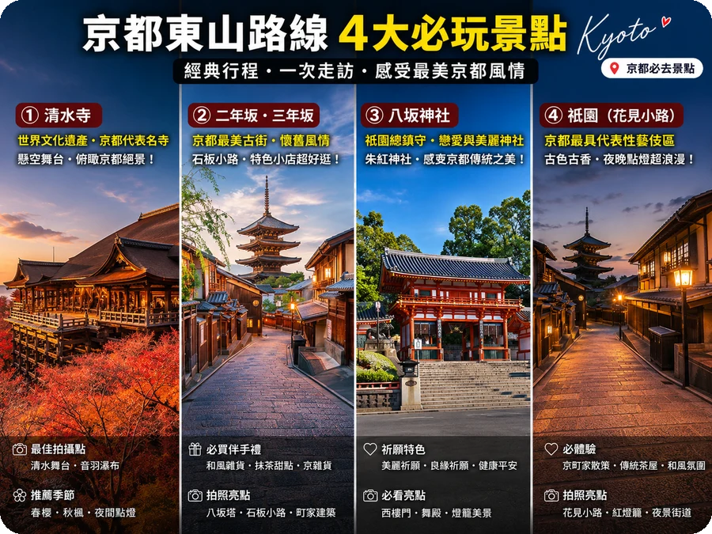
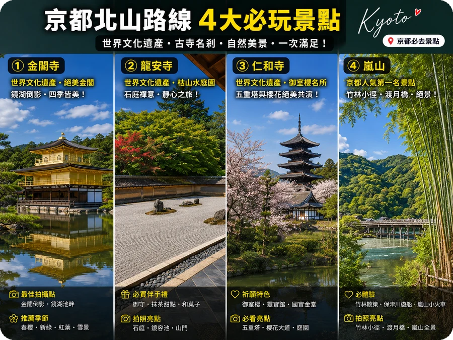
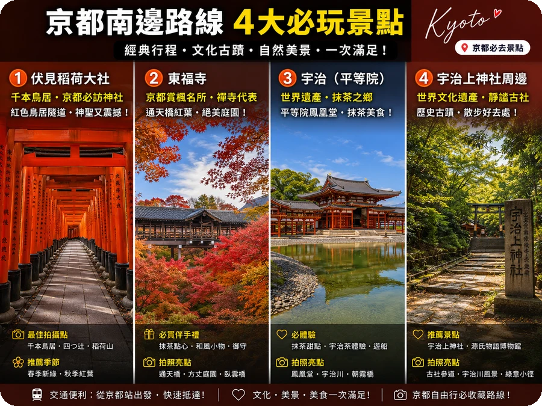

🔥 点此查看最新優惠 →
🗓️ 京都5天4夜自由行行程總覽
第一次去京都不知道怎麼安排？這篇給你最完整的5天4夜行程，從寺廟散步到美食住宿全包。每天步行約8-12公里，適合喜歡慢慢走的旅人。
Day 1
抵達京都 → 祇園花見小路 → 八坂神社夜參
- 下午：關西機場搭 Haruka 特急到京都車站（75分鐘）
- 傍晚：入住四條河原町附近飯店，步行到祇園
- 晚上：花見小路散步，運氣好可遇到藝妓。八坂神社夜間點燈超美
- 晚餐：祇園附近京料理餐廳（人均 ¥3,000-5,000）
💡 省錢Tip：關西機場到京都，買「ICOCA & HARUKA」套票最划算，單程 ¥1,800（原價 ¥2,850）。提前在
Trip.com預訂飯店，早鳥優惠最多可省 30%。
Day 2
清水寺 → 二年坂三年坂 → 高台寺 → 錦市場
- 07:30：清水寺開門前到，避開人潮，木造舞台晨光最美
- 09:00：二年坂·三年坂石板路散步，和服體驗拍照
- 11:00：高台寺（豐臣秀吉夫人寧寧的寺廟），庭園超美
- 12:30：午餐在石�的小路或寧寧之道解決，豆腐料理推薦
- 14:00：八坂神社參拜，圓山公園散步
- 16:00：錦市場小吃（玉子燒、豆乳甜甜圈、漬物試吃）
💡 避人潮：清水寺早上8點前到，可以獨享木造舞台。旅遊團9點後才會大量湧入。
Day 3
伏見稻荷千本鳥居 → 東福寺賞楓 → 宇治抹茶
- 05:30：伏見稻荷大社，清晨5點去幾乎包場！千本鳥居一個人走超有電影感
- 08:00：東福寺（賞楓季必去，通天橋看紅葉地毯）
- 10:30：搭JR奈良線到宇治（約20分鐘）
- 11:30：中村藤吉本店抹茶聖代、平等院參觀
- 14:00：回京都，下午自由活動或逛河原町商圈
💡 省錢Tip：伏見稻荷24小時開放、免門票！清晨去不但免門票，還能拍到無人的千本鳥居。山頂來回約2小時。
Day 4
嵐山竹林 → 金閣寺 → 龍安寺枯山水
- 07:00：嵐山竹林，早上7點前到幾乎無人，拍照超美
- 09:00：渡月橋、天龍寺（世界遺產，庭園必看）
- 11:30：嵐山午餐（豆腐料理、抹茶蕎麥麵）
- 13:30：搭巴士到金閣寺（鏡湖池倒映金色建築）
- 15:30：龍安寺枯山水庭園，15塊石頭的禪意
- 17:00：回市區，晚餐在先斗町小巷找居酒屋
💡 交通Tip：買京都巴士一日券 ¥700，搭3次就回本。嵐山到金閣寺需轉車，用巴士一日券最划算。
Day 5
銀閣寺 → 哲學之道 → 京都車站 → 關西機場
- 09:00：銀閣寺（銀閣與金閣的對比美）
- 10:30：哲學之道散步（春天櫻花隧道、秋天紅葉）
- 12:00：回飯店收拾行李
- 14:00：京都車站午餐（拉麵小路、伊勢丹地下美食街）
- 16:00：搭 Haruka 特急往關西機場
💡 伴手禮：京都車站伊勢丹B1買生八橋、抹茶巧克力最方便，種類最齊全。提前2小時到機場，免稅店也很好逛。
💰 京都5天4夜預算參考
以下為小資方案與舒適方案的預算參考，不含購物。
| 項目 |
小資方案 |
舒適方案 |
備註 |
| 機票（台北-大阪） |
NT$6,000 |
NT$10,000 |
廉航早鳥vs傳統航空 |
| 住宿（4晚） |
NT$4,800 |
NT$12,000 |
青旅vs3-4星飯店 |
| 交通 |
NT$1,500 |
NT$2,500 |
巴士一日券+Haruka |
| 餐飲（5天） |
NT$4,000 |
NT$7,500 |
路邊攤vs餐廳+懷石 |
| 門票 |
NT$800 |
NT$1,200 |
清水寺+金閣寺等 |
| 其他 |
NT$1,000 |
NT$2,000 |
和服體驗、伴手禮 |
| 總計 |
NT$18,100 |
NT$35,200 |
不含購物 |
💡 使用我們的 旅遊預算試算器，自動計算各國自由行花費。
📊 想知道其他國家的預算？
免費預算試算器，輸入國家天數自動計算
開始試算 →
🏯 京都3大寺廟散步路線（各路線詳細說明）
京都是日本的古都，擁有超過2000座寺廟和神社。但第一次來京都，到底該怎麼安排路線才不會走回頭路？這篇攻略整理了關西交通票券完整比較，以及3條最經典的散步路線，讓你用最省錢的方式玩遍京都。
路線 A
東山路线：清水寺 → 二年坂三年坂 → 八坂神社 → 祇園
最經典的京都散步行程，全程約3公里，沿著古街慢慢走，感受千年古都氛圍。如果安排大阪美食行程，建議買JR关西地區鐵路周遊券，可以無限搭乘京都→大阪的交通。
- 清水寺（門票 ¥400）：木造舞台懸在山崖上，春秋兩季夜間點燈必看。建議搭配日本機票省錢攻略一起規劃，可以省下不少交通費。
- 二年坂·三年坂：石板路古街，和服體驗最經典的拍攝地點
- 八坂神社：免門票，祇園祭的主場，舞殿提燈超美
- 祇園花見小路：運氣好可遇到藝妓，傍晚氣氛最佳

📷 小編體悟：清水寺早上8點前到，遊客還沒湧入，木造舞台在晨光裡特別莊嚴。走下二年坂石板路，兩旁和菓子店飄出甜味，這段路是京都最有「古都感」的散步路線。
💡 建議：清水寺早上8點前到可避開人潮，從清水寺往八坂神社方向走是下坡，比較輕鬆。
路線 B
北山路線：金閣寺 → 龍安寺 → 仁和寺 → 嵐山
金閣寺的耀眼金色與嵐山竹林的翠綠，一條路線看盡京都兩種美。
- 金閣寺（門票 ¥500）：鏡湖池倒映金閣，上午順光拍照最美
- 龍安寺（門票 ¥500）：枯山水庭園之最，15塊石頭的禪意
- 嵐山竹林：免門票，早上7點前到幾乎無人，拍照超美
- 渡月橋：嵐山地標，秋楓期間橋面兩側一片火紅

📷 小編體悟：金閣寺的耀眼金色在上午順光時最美，鏡湖池倒映出的畫面一輩子忘不了。龍安寺枯山水15塊石頭怎麼看都湊不齊，禪意就在這種「看不盡」裡。
路線 C
南邊路線：伏見稻荷 → 東福寺 → 宇治
千本鳥居的震撼與宇治抹茶的甘甜，加碼東福寺的紅葉絕景。
- 伏見稻荷大社：免門票！千本鳥居走到底約2小時，清晨人最少
- 東福寺（門票 ¥400）：京都賞楓No.1，通天橋看整片紅葉地毯
- 宇治：搭JR約20分鐘，中村藤吉本店吃抹茶聖代、平等院參觀

📷 小編體悟：伏見稻荷清晨5點去幾乎包場，千本鳥居一個人走下去超有電影感。下午搭JR去宇治，中村藤吉的抹茶聖代一定要點，苦甜交織的滋味是京都行最棒的結尾。
💡 省錢提示：伏見稻荷24小時開放，免門票！清晨5-6點去幾乎包場，拍照不用等。山頂來回約2小時。
🍁 京都賞楓攻略
京都秋季賞楓是全日本最熱門的活動之一，以下關鍵資訊幫你規劃：
- 最佳時期：11月中旬 - 12月初（每年略有不同，追蹤「京都紅葉情報」）
- 夜楓推薦：永觀堂、清水寺、高台寺（夜間點燈超夢幻）
- 避人潮秘訣：選非熱門寺廟如大德寺、詩仙堂、圓光寺
- 穿搭建議：11月京都早晚5-10°C，洋葱式穿搭，帶圍巾
- 住宿搶訂：賞楓季住宿提前3個月預訂，越晚越貴
🍵 京都必吃5大美食
- 京料理（懷石料理）：精緻多道式，午餐套餐 ¥3,000-5,000 比晚餐划算
- 抹茶甜點：中村藤吉（宇治本店）、茶寮都路里（四條河原町）、ARABICA 咖啡
- 湯豆腐：南禪寺順正，在寺廟裡吃豆腐料理超有氣氛，人均 ¥3,000
- 生八橋：京都伴手禮首選，聖護院八橋本店可試吃各種口味
- 錦市場小吃：玉子燒、豆乳甜甜圈、漬物試吃，邊走邊吃1小時搞定午餐
🚌 京都交通攻略
- 京都巴士一日券：¥700，搭3次就回本，大部分景點都到
- 地鐵：只有2條線（烏丸線+東西線），不如巴士方便
- 嵐電：前往嵐山的小火車，北野白梅町→嵐山約25分鐘
- 騎自行車：京都地勢平坦，租單車1天約 ¥1,000，最自由的移動方式
💡 小編真心話
京都寺廟最美的時候其實是「平日早上開門時」（早上8:00-9:00），
這時候遊客很少，可以靜心感受寺廟的氛圍。另外，很多寺廟都有「御朱印帳」
（收集寺廟印章的冊子），買一本可以留下美好的回憶。
春天賞櫻和秋天賞楓雖然美，但人潮也超多，如果喜歡清幽的氛圍，
建議夏天或冬天來，雖然比較熱或冷，但可以獨享寺廟的寧靜。
穿著和服（或浴衣）逛寺廟是很棒的體驗，但記得預約早一點的時段，
不然夏天會熱死、冬天會冷死！
❓ 常見問題
京都賞楓什麼時候最美？
最佳賞楓期通常在11月中旬至12月初。清水寺和永觀堂夜楓點燈約11月中旬開始，建議平日前往避開週末人潮。
京都寺廟需要門票嗎？
大部分知名寺廟需門票：清水寺 ¥400、金閣寺 ¥500、伏見稻荷免費、銀閣寺 ¥500。建議買京都巴士一日券 ¥700 搭公車移動。
京都怎麼避開人潮？
1. 早上8點前到清水寺（9點後旅遊團湧入）2. 選擇非熱門寺廟如大德寺、詩仙堂 3. 平日去伏見稻荷 4. 秋季夜楓選週四或週五 5. 避開日本連假。
京都推薦住哪裡？
首推四條河原町附近，逛街吃飯都方便。預算夠可選嵐山溫泉旅館。京都車站附近交通方便但比較無聊，祇園區域最有京都氛圍但房價偏高。
京都必吃美食有哪些？
京料理（懷石料理）、抹茶甜點（中村藤吉、茶寮都路里）、湯豆腐（南禪寺順正）、生八橋（伴手禮首選）、錦市場各式小吃。預算有限可選午餐套餐，約 ¥2,000-3,000。
📘
京都賞楓時間，限時免費送
填Email立即收到京都楓葉攻略PDF下載連結和最新旅遊資訊
🔒 尊重隱秘，隨時可取消訂閱
💬 LINE 詢問包車報價
🗺️ 幫我規劃台灣行程